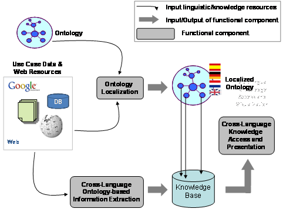

")
")
MONNET
La arquitectura prevista en Monnet consta de los siguientes módulos o componentes: módulo de Localización de Ontologías, módulo de Extracción de Información basada en Ontologías Multilingües, y módulo de Acceso Multilingüe al conocimiento y Presentación de la información. Las hipótesis centrales de la arquitectura son que i) los datos de los casos de uso y la información pertinente estarán disponibles en varias lenguas y formatos, como por ejemplo, bases de datos, documentos Web, Wikipedia, Linked Data o datos enlazados, etc; ii) el conocimiento de los casos de uso, es decir, la semántica del dominio, estarán modelados en una ontología que se formalizará mediante el uso de un lenguaje de representación de ontologías como RDF/S o OWL, y especificará cuáles son los conceptos (clases, propiedades, relaciones) de importancia para el dominio de los casos de uso.

Figure 1: High-level overview of the Monnet architecture and components
Para una descripción mas detallada del proyecto, visite el portal del proyecto.
Rol de la UPM en MONNET
La UPM participa principalmente en la creación de una arquitectura para la localización de ontologías a diversos lenguajes naturales. La localización de ontologías es uno de los aspectos centrales del trabajo científico y tecnológico que se llevará a cabo en Monnet, y consta de seis tareas: 1) la definición de un modelo lingüístico para almacenar la información multilingüe en las ontologías, 2) la definición de una arquitectura que proporcione un acceso flexible a los recursos de la Web y de los casos de uso que den soporte al proceso de localización, 3) la creación de componentes de pre-procesamiento de las etiquetas de la ontología, 4) la definición del proceso de traducción, 5) el desarrollo del componente de localización per se, y 6) la tarea de evaluación.
La UPM cuenta ya con una amplia experiencia en la definición de modelos lingüísticos para el enriquecimiento de ontologías con información multilingüe, así como en la localización semiautomática de ontologías a diferentes lenguas. El trabajo previo en este área se ha llevado a cabo en el marco del proyecto NeOn. Se han hecho dos contribuciones en este área: por un lado, el Repositorio de Información Lingüística (LIR, en sus siglas en inglés), un modelo para el enriquecimiento de las ontologías con información léxica y terminológica con el propósito de contribuir a su localización, y por otro lado, LabelTranslator, un plugin de la herramienta NeOn para la localización semiautomática de ontologías a varias lenguas. Para obtener más información, consulte NeOn, LabelTranslator y LIR.
Participants
Las personas del OEG involucrados en el proyecto MONNET son:
Publicaciones y otros resultados
Publilcaciones más importantes:
- Enriching Ontologies with Multilingual Information. E. Montiel-Ponsoda, G. Aguado-de-Cea, A. Gómez-Pérez, and W. Peters. In Natural Language Engineering Journal (in press).
- A Note on Ontology Localization. P. Cimiano, E. Montiel-Ponsoda, P. Buitelaar, M. Espinoza, and A. Gómez-Pérez. In Journal of Applied Ontology (in press).
- G. Aguado-de-Cea, A. Gómez-Pérez, E. Montiel-Ponsoda, L.M. Vilches-Blázquez. Riviere or Fleuve? Modelling Multilinguality in the Hydrographical Domain. In Proceedings of the First International Workshop on the Multilingual Semantic Web (MSW 2010), Raleigh, North Carolina, USA, April 27, 2010. CEUR-WS/Vol-571.
Información adicional
- Fecha de inicio: 01/03/2010
- Fecha de finalización: 28/02/2013
- Presupuesto global del proyecto: 3.200.608 €
Ofertas de trabajo
Actualmente, no hay ninguna oferta de trabajo o becas disponibleas para este proyecto. Para ofertas en otros proyectos o áreas de investigación, visite la sección ofertas de trabajo.
No obstante, puede contactar con Asunción Gómez-Pérez para comprobar si hay posibles ofertas en un futuro cercano.